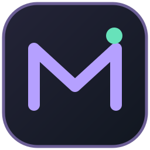

인터넷 연결을 확인한 뒤 다시 시도해 주세요.
앱 화면과 메뉴는 기존 앱과 같습니다.여기서는 PC 창의 표시 방식만 조절합니다.
앱의 밝은·어두운 테마는 앱 상단의 해·달 아이콘에서 바꿀 수 있습니다.
Ctrl + Shift + R 또는 트레이의 ‘불투명하게 복원’으로 밝기와 불투명도를 100%로 되돌릴 수 있습니다.
이전 PC 요약 화면에 입력했던 기록입니다. 그대로 보관되어 있으며, 기존 앱의 자산입력에는 자동으로 옮겨지지 않습니다.